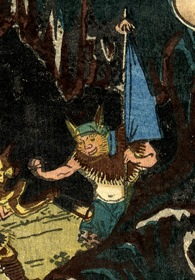

青い旗を持つ鬼。簑のようなものを着ている。緑色の頭巾をかぶっているが、2本の角が突き出ている。
著作者：五雲亭貞秀／出典：親書誌：U426_nichibunken_0233：頼光大江山入；ライコウオオエヤマイリ／日付：2010／資源識別子：U426_nichibunken_0233_0001_0000
Copyright (c)2010- International Research Center for Japanese Studies, Kyoto, Japan. All rights reserved.